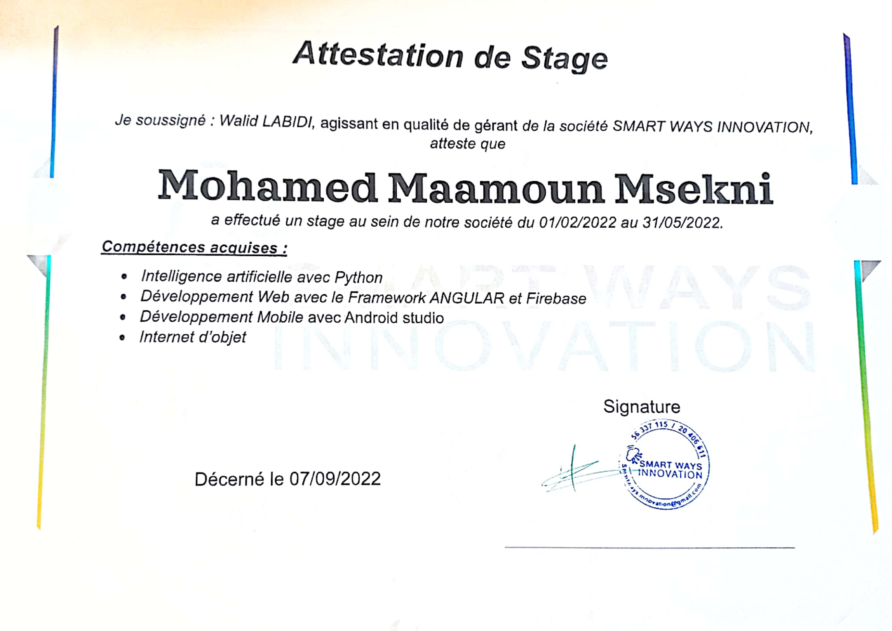

Poste : Stagiaire en mantenance électrique
Période : Juillet-Août 2021
Description : Ce travail a été entrepris dans la le société sopal (société de
production des articles en laiton) Etant un monopole en Tunisie
de la production les article en laiton avec de machine qui
constitue une activité me permettant d’atteindre l’objectif de
mon stage:
-Se familiariser avec la vie professionnelle
-Connaître les différentes activités de sopal
-Exploiter les connaissances théoriques acquises au cours de
mes études en licence électronique .
Poste : Stagiaire en informatique
Période : Janvier-Mai 2022
Description : J'ai travaillé sur un projets de fin d'etude en utilisant l'IoT , une application mobile et l'intelligence artificielle .
